Lab Objective/Prelab
The purpose of this lab is to implement grid localization using a Bayes filter in the real environment in the lab.
Now that I have Baye's working in the simulation environment I can use that to check how good my robot localizes
in the actual lab set-up. I used my lab 9 mapping code and lab 10 simulation code for this lab. For the pre-lab I
just imported all the required python/bluetooth files into the simulation release code.
Simulation
For the first step, I initially tested that the provided Baye's filter code matches the one from lab 10.
The graph looked correct for the expected output of running Baye's filter on localization.
The screenshot of the trajectory graph I got from running lab11_sim is shown below:
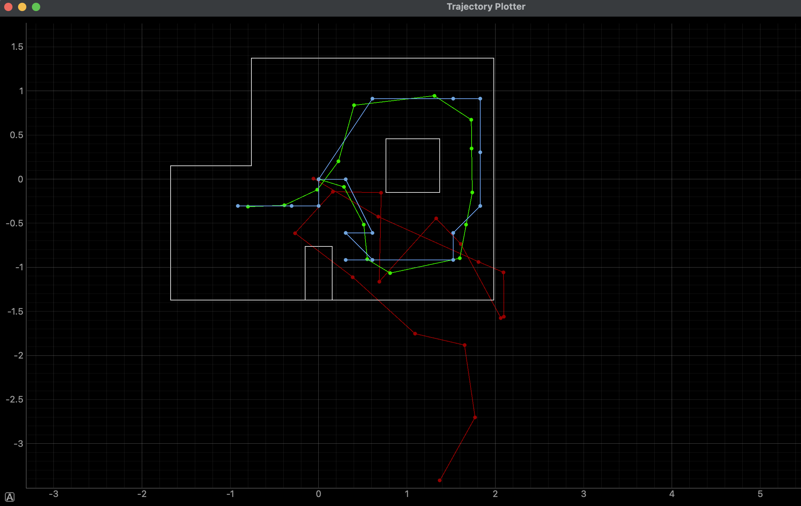
Code Set-Up
First, I completed the function perform_observation_loop(). This function calls my MAPPING case from Lab 9 and
triggers a notification handler that collects ToF and yaw sensor data. It stores these data points in two arrays:
sensor_ranges and sensor_bearings respectively. The implementation initializes empty arrays for 18 sensor readings
(at 20° intervals for a full 360° rotation), activates the BLE notification handler, and sends the MAPPING command
to the robot which executes a programmed rotation while collecting ToF readings. The function waits for 20 seconds
using asyncio.sleep() to ensure complete data collection before converting the raw sensor readings from
millimeters to meters and formatting the bearing data as a NumPy column vector, ultimately returning these
processed arrays to be used by the Bayes filter localization algorithm.
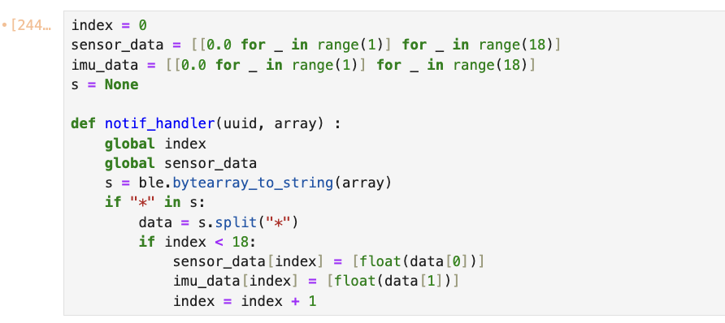
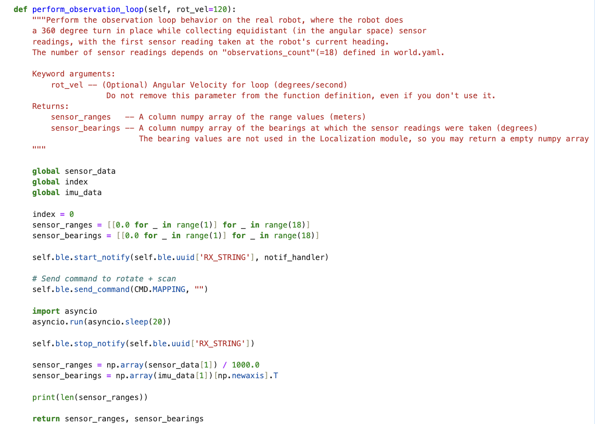
I also modified my MAPPING case from lab 9 so that my
robot spins in 20° increments from 0 to 360. It collects one ToF reading at each angle, for a total of 18 data
points. I also reversed the direction of spinning so that it now goes anti-clockwise.
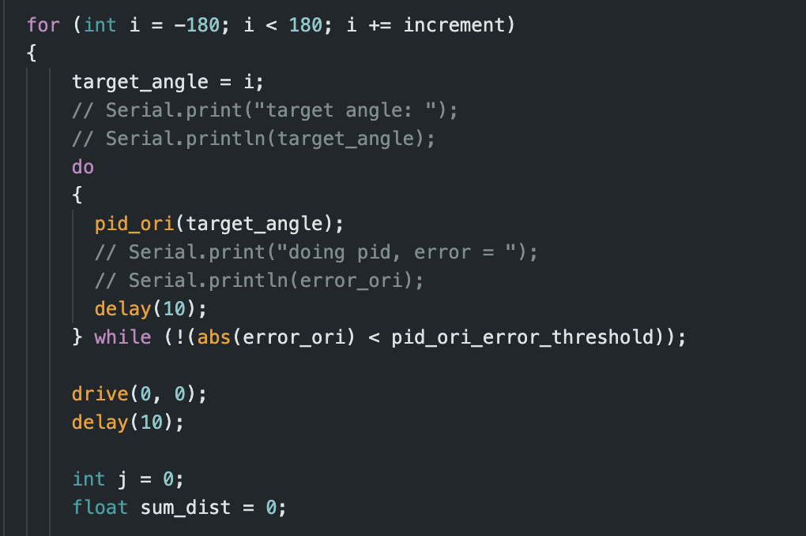
Localization Results
Once I had all the code set-up I then began performing localization. For each simulation plot below the green dot
is the ground truth value while the blue dot is the belief.
Point (0,3)
This was the first point I tried out. I got pretty accurate results for this point and in both runs my belief
value was exactly on top of the ground truth.
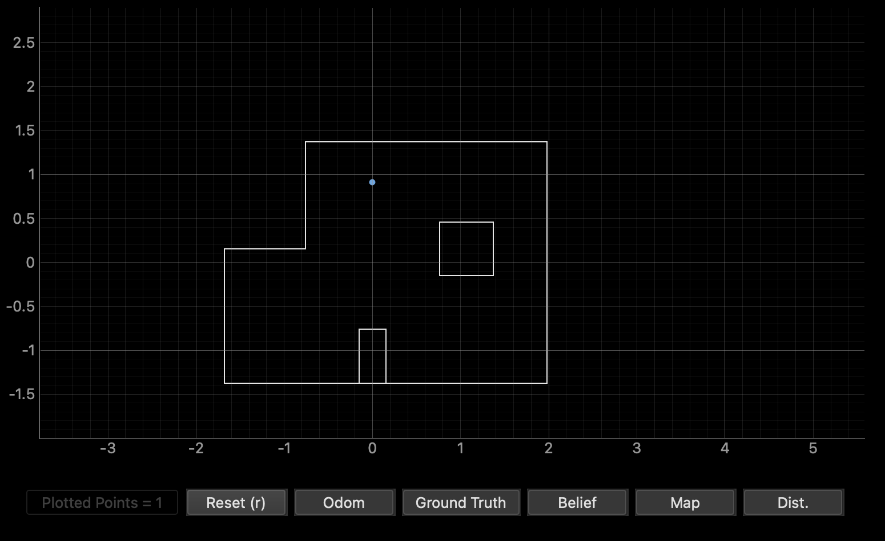
The belief values for the two runs are:
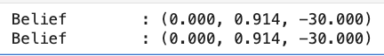
Point (5,3)
This point consistently was slightly off from the ground truth value. This this is probably because of the vast
difference between the wall distances from the marked spot. The walls to the left are much further away than those
to the right and bottom. Also, the box in the middle could also be causing some confusion.
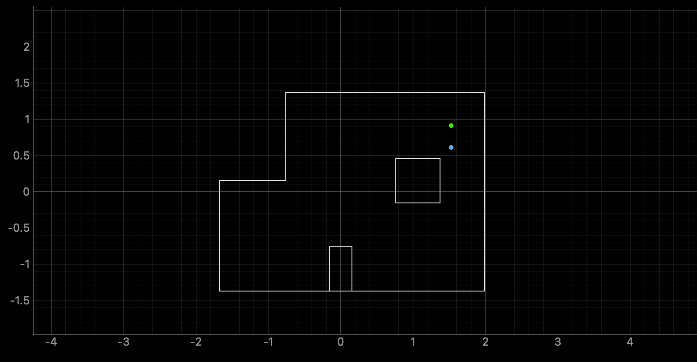
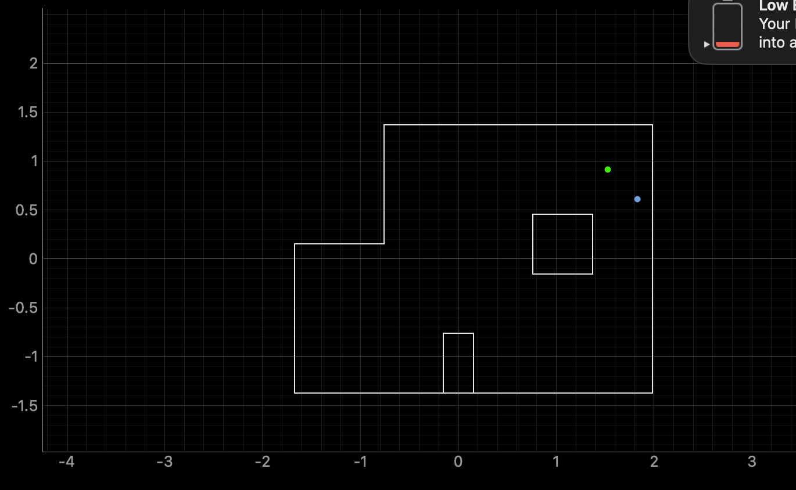
The closest belief values was 0.3044 metres below the ground truth. The belief values for the two runs are:
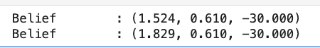
Point (-3,-2)
This point was also consistently slightly off from the ground truth value. Again, this is probably because of the
vast
difference between the wall distances from the marked spot. I was able to get slighly bette results in my second
run.
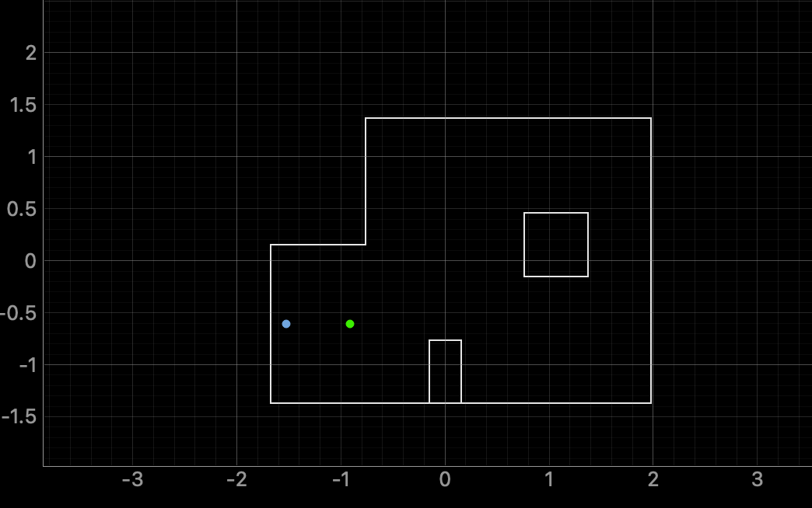
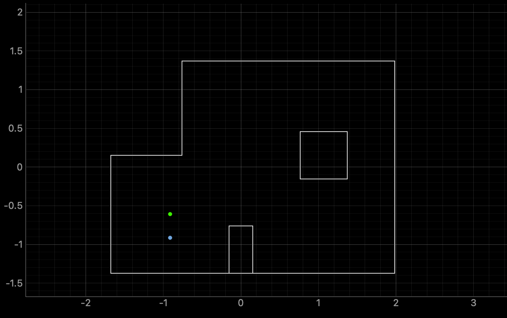
The closest belief values was -0.3044 metres to the left of the ground truth. The belief values for the two runs
are:
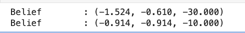
Point (5,-3)
For this last point I was getting astonishlingly inconsistent results initially. A lot of my initial runs
had the robot thinking it located outside of the map at the top left and I noticed that this corner resembles the
bottom right corner of the lab. I saw that Mikayla had had a similar issue last year and implemented the fix she
suggested which was to set the probability that the robot is outside the map to 0.
After doing this I was able to get two good
results for this point. The graph for the more accurate result is below.
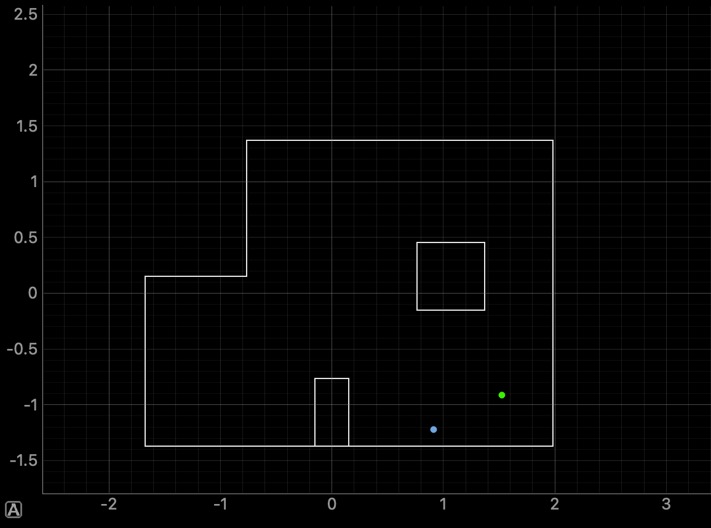
The closest belief value was 0.6086 metres to the left and 0.3046 metres to the
bottom of the ground truth.
The belief values for the two runs are:
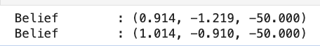
Conclusion
Overall, this lab provided valuable insights into robotic localization techniques and Baye's filter.
The robot localized most accurately at point (0,3),
where the belief value perfectly matched the ground truth in multiple trials. This could be because of the
central position having more equal distances to surrounding walls, providing more consistent
sensor readings for the Bayes filter. Points with uneven distances to walls, such as
(5,3) and (-3,-2), showed more inaccuracies. Point (5,-3) was the hardest, and I needed to modify the code, after
which I achieved more accurate beliefs.
These results demonstrate that localization accuracy is quite dependent
on the robot's
relative position to environmental features, with similar feature locations being more difficult to
distinguish.
References
I referenced Stephan Wagner and Mikayla's work for Lab 10. Lulu, Jennie and I also worked together on this lab and
discussed how to implement the various parts.